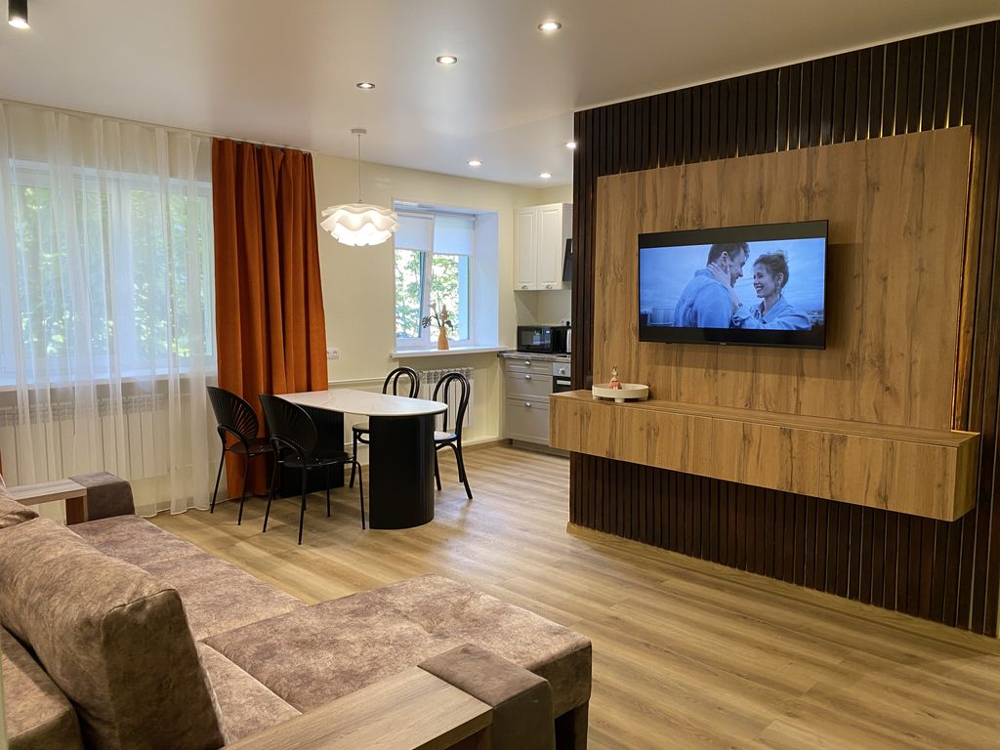
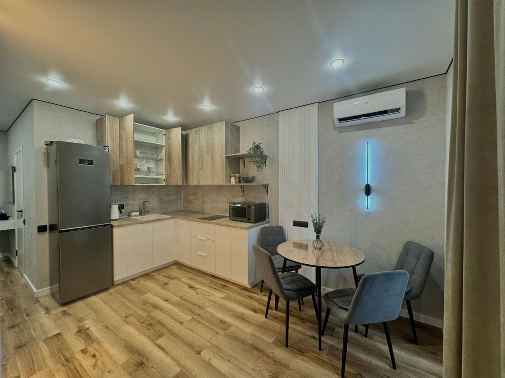
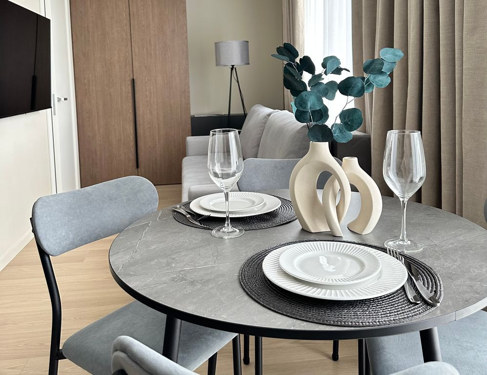
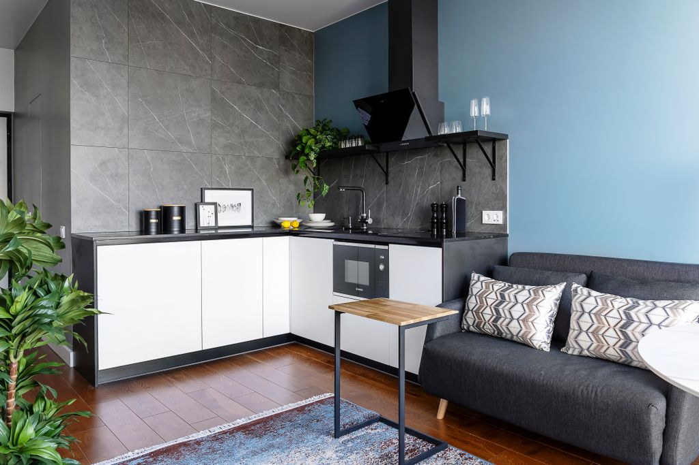
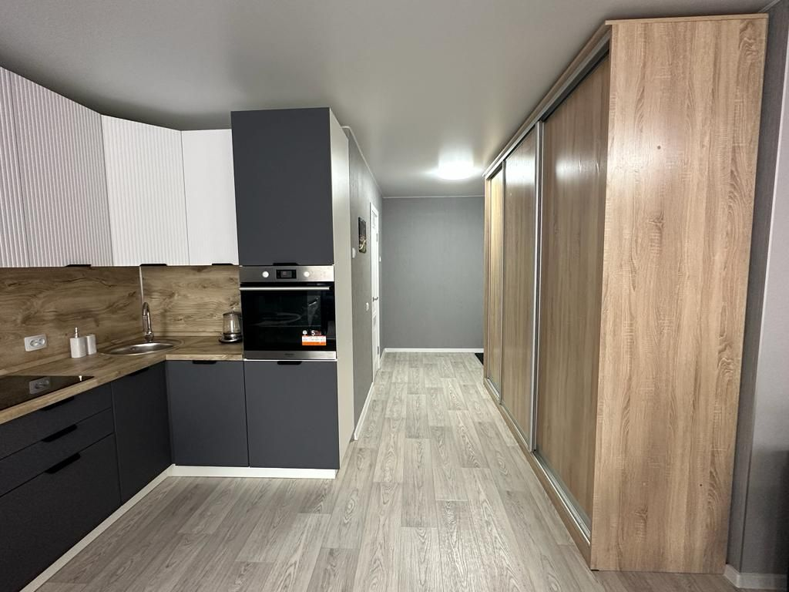
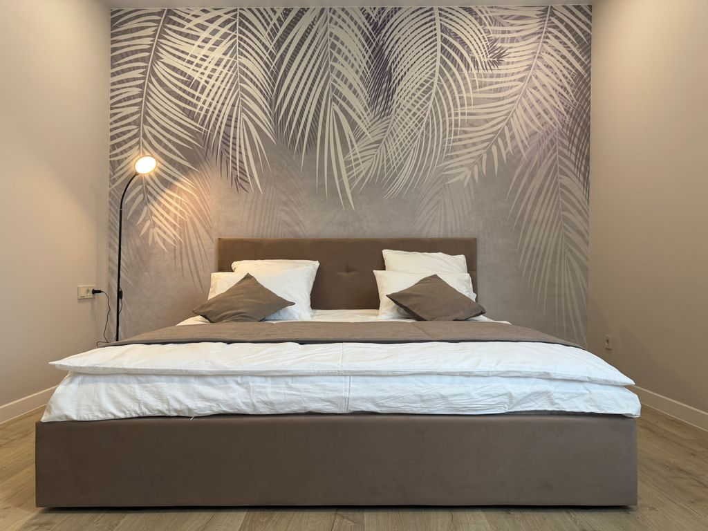
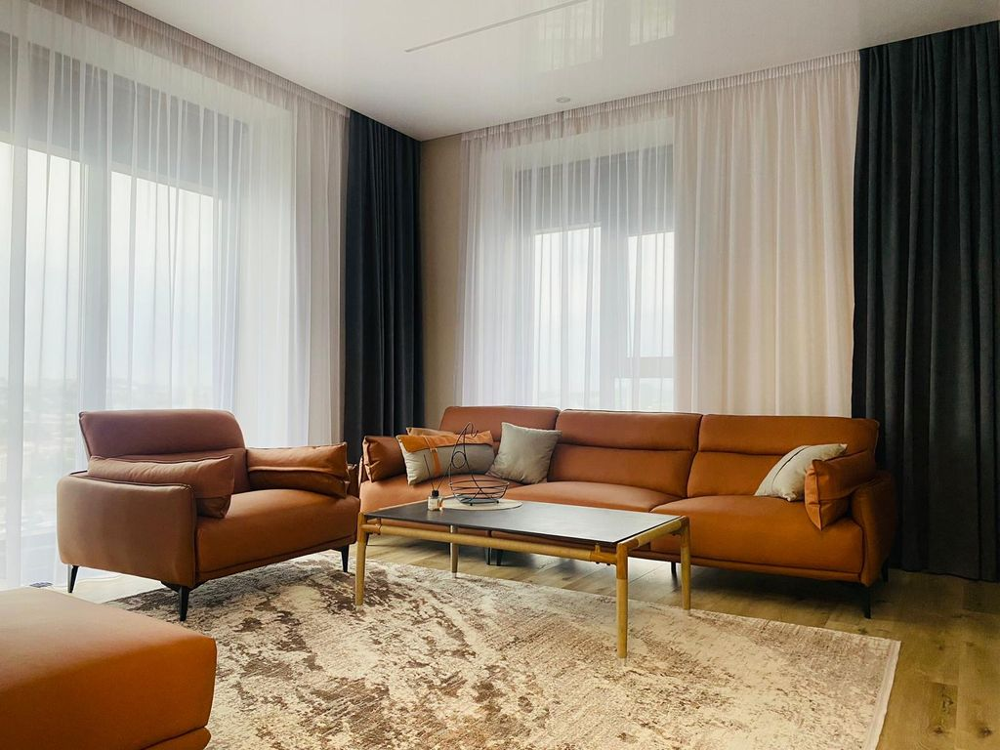

Квартира с видом на город
Предлагаю вашему вниманию прекрасную двухкомнатную квартиру во Владивостоке, расположенную в 1 минуте
от Мариинского театра оперы и балета. В квартире есть все для комфортного проживания 4-х человек.
Квартира полностью обустроена, очень теплая и светлая. Вид на город с трёх сторон: восток, юг, запад.
В доме находится магазин Квартет вкусов и К&Б.
Дом ЖК Театральный находится в 10 минутах езды от самого центра города. Очень развитая инфраструктура вокруг.
По запросу предоставляется парковочное место для одного автомобиля в крытом паркинге.

Апартаменты на 20м этаже с панорамным видом бухту Улисс

Новая квартира с камерной атмосферой в новом доме. Современный дизайнерский ремонт и оснащение.
Последний 20й этаж, вид на мост на остров Русский и бухту Улисс с доступом на эксплуатируемую крышу.
Удобная транспортная развязка, рядом остановки общественного транспорта, можно легко уехать в любой конец города.
В 5 минутах езды по Золотому мосту до центра города и в 10 минутах езды по Русскому мосту до о. Русский. 7 минут до Калины Молл.
В пешей доступности продуктовые магазины, аптеки, кафе, рынки итд.
Панорамные окна с потрясающим видом на город, 4 быстрых лифта.
Во дворе дома расположены спортивная и детская площадки, минимаркет в соседнем доме.
Мини-студия на Заре
Уютная мини-студия в пяти минутах от остановки Магнитогорская. Удобное расположение - широкая транспортная развязка до любой точки города.
Новая квартира студия в привлекательном районе
Сдаётся квартира посуточно! Новый дом, новый ремонт. Есть вся необходимая новая, современная качественная мебель
Просторная светлая студия в самом центре
Дом находится на оживленном перекрестке улицы Адмирала Фокина и Океанского проспекта. Самое удобное расположение для пеших прогулок по городским достопримечательностям.
Квартира в центре города с видом на море
Дом расположен в центре Владивостока. В 10 мин. ходьбы крупный транспортный узел: конечная остановка большинства автобусных маршрутов.